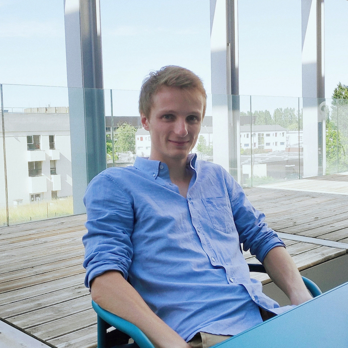

Stat·Eco·ML Seminar
Statistics·Econometrics·Machine Learning Seminar at ENSAE Paris
- When: one talk every two weeks, on Wednesdays from 2pm to 3pm
- Where: ENSAE Paris, room 3001
- Organizers: Martin Mugnier, François-Pierre Paty, Nicolas Schreuder
If you wish to present in the seminar, please register here and contact the organizers.
Upcoming Talks
|
François-Pierre Paty (CREST) November 20, 2019  |
An Introduction to Optimal Transport Optimal transport (OT) dates back to the end of the 18th century, when French mathematician Gaspard Monge proposed to solve the problem of déblais and remblais. Yet, the mathematical formulation of Monge was rapidly found to meet its limits in the lack of provable existence of the studied objects. It is only after 150 years that OT enjoyed a resurgence, when Kantorovich understood the suitable framework that would allow to solve Monge’s problem and give rise to fundamental tools and theories in probability, optimization, differential equations and geometry. While applications in economics have a long history, it has only been recently that OT has been applied to statistics and machine learning, as a way to analyze data. In this mini-lecture, I will first define OT and present the most prominent results of OT theory. Then, I will give an overview of the current research in statistical and algorithmic OT, with an emphasis on machine learning and economics applications. |
|
Théo Lacombe (INRIA Saclay) December 4, 2019 
|
An Introduction to Topological Data Analysis Topological Data Analysis (TDA) is a recent approach in Data Sciences that aims to encode some structured objects---think of graphs, time series, points on a manifold for instance---with respect to the topological information they contain. The first half of this introductive lecture will give a high-level picture of TDA. We will then briefly introduce the persistent homology, a notion coming from algebraic topology that is central in TDA to build our topological signatures. Finally, the last part of the talk will present some statistical and learning aspects of TDA. |
|
Julien Chhor (CREST) January 8, 2020 |
Minimax Testing in Random Graphs TBA |
|
Jules Depersin (CREST) January 22, 2020 
|
An Introduction to Empirical Processes TBA |
Past Talks
|
Badr-Eddine Chérief-Abdellatif (CREST) November 6, 2019 
|
Theoretical Study of Variational Inference Bayesian inference provides an attractive learning framework to analyze and to sequentially update knowledge on streaming data, but is rarely computationally feasible in practice. In the recent years, variational inference (VI) has become more and more popular for approximating intractable posterior distributions in Bayesian statistics and machine learning. Nevertheless, despite promising results in real-life applications, only little attention has been put in the literature towards the theoretical properties of VI. In this talk, we aim to present some recent advances in theory of VI. First, we show that variational inference is consistent under mild conditions and retains the same properties than exact Bayesian inference in the batch setting. Then, we study several online VI algorithms that are inspired from sequential optimization in order to compute the variational approximations in an online fashion. We provide theoretical guarantees by deriving generalization bounds and we present empirical evidence in support of this. |